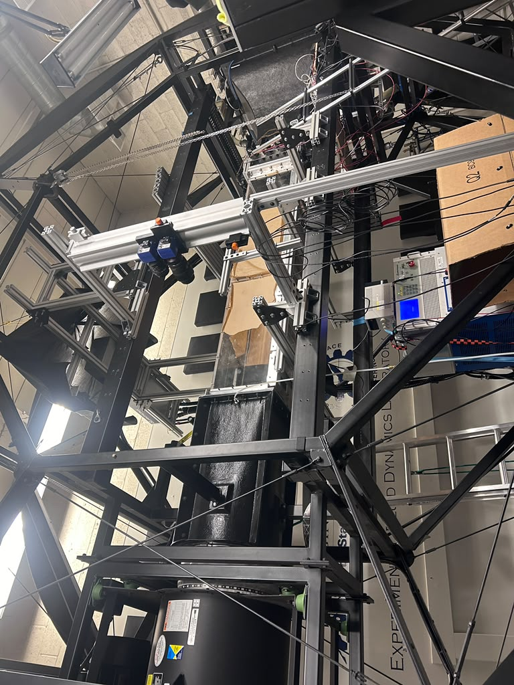
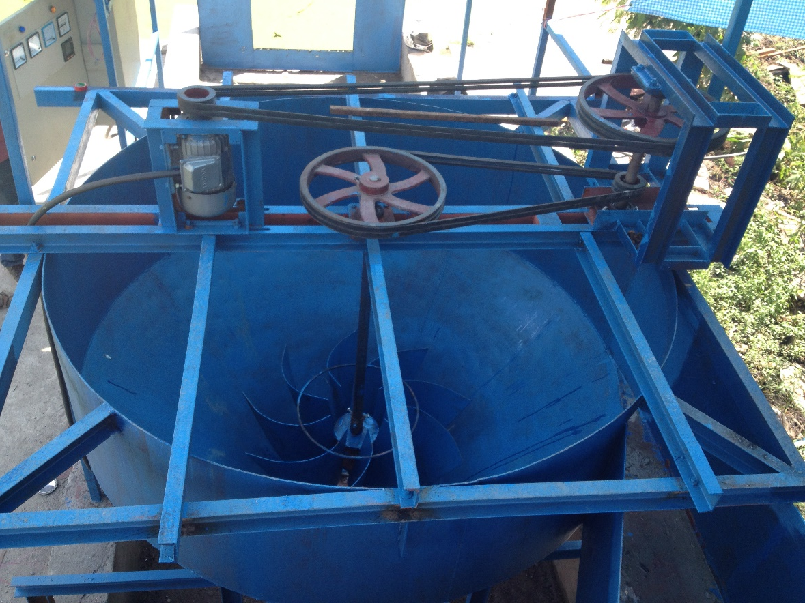
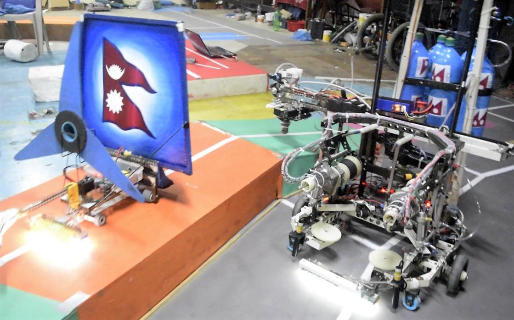

Turbulence Generation & Characterization
Designed experimental facilities and conducted PIV measurements to investigate turbulence and coherent structures.
PIV | Python | MATLAB | LabVIEW | CFD
View Project →MECHANICAL ENGINEER | PhD RESEARCHER
Specializing in experimental fluid dynamics, computational modeling, mechanical design, and engineering R&D.
I am a Mechanical Engineer and PhD researcher at Utah State University, with experience in experimental fluid dynamics, mechanical system design, CFD, and engineering research and development.
My work combines experimental testing, computational analysis, and mechanical design to understand complex engineering problems and develop practical solutions.

Designed experimental facilities and conducted PIV measurements to investigate turbulence and coherent structures.
PIV | Python | MATLAB | LabVIEW | CFD
View Project →
Developed mechanical components and runner designs for a low-head hydropower prototype.
CATIA | ANSYS | CFD | FEA
View Project →
Designed and fabricated mechanical subsystems for international robotics competitions.
SolidWorks | FEA | Prototyping
View Project →Interested in engineering R&D, experimental mechanics, fluid dynamics, and mechanical design opportunities.
Email Me LinkedIn Google Scholar